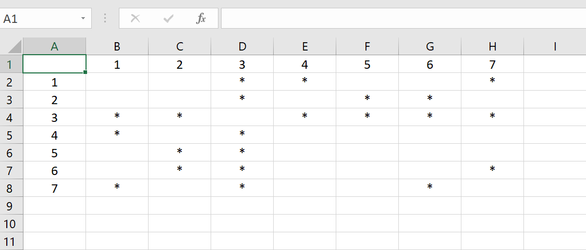
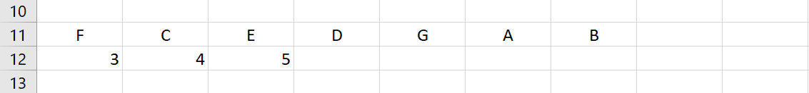
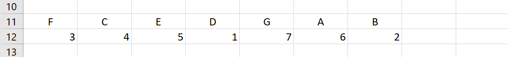
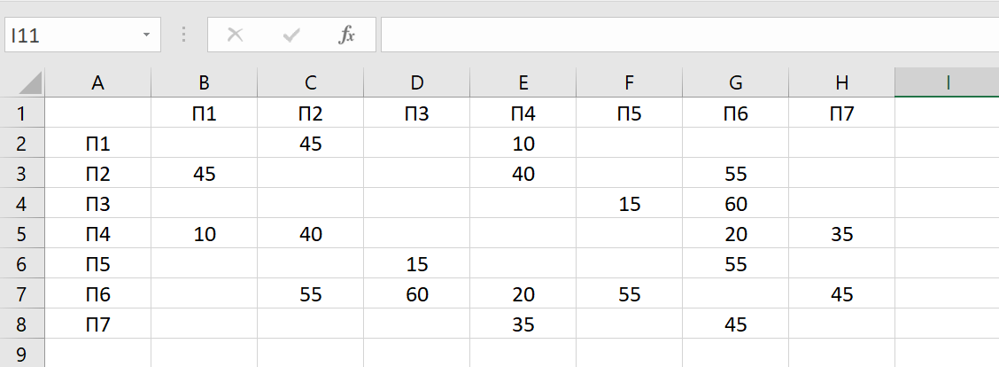
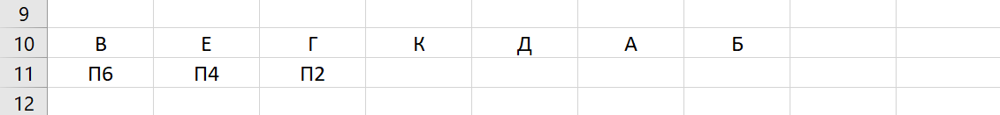
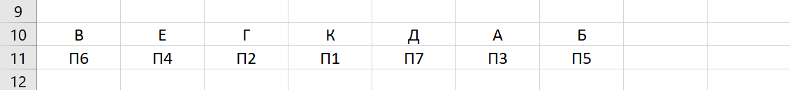

Задание №1
| На рисунке слева изображена схема дорог Н-ского района, в таблице звёздочкой обозначено наличие дороги из одного населённого пункта в другой. Отсутствие звёздочки означает, что такой дороги нет. Каждому населённому пункту на схеме соответствует его номер в таблице, но неизвестно, какой именно номер. Определите, какие номера населённых пунктов в таблице могут соответствовать населённым пунктам A и G на схеме. В ответе запишите эти два номера в возрастающем порядке без пробелов и знаков препинания. |
Решение:
- Откроем Excel и перепишем данную таблицу(по желанию)

- Затем сделаем вспомогательную таблицу, куда мы будем заносить данные про точки. Находим особые точки: F(3 строка), C(4 или 5 строка) и E(5 или 4 строка). Пусть C - 4 строка , а E - 5 строка.

- Далее, зная информацию про точки F и C, мы можем найти точку D - 1 строка. Таким же образом мы можем найти точки G, A, B, опирась на информацию из двух таблиц. Получается, что G - 7 строка, A - 6 строка, B - 2 строка.

- Нам нужна была информация про точки A(6 строка) и G(7 строка), записываем ответ.
Ответ:67
Задание №2
| На рисунке справа схема дорог Н-ского района изображена в виде графа, в таблице содержатся сведения о длинах этих дорог (в километрах). Так как таблицу и схему рисовали независимо друг от друга, то нумерация населённых пунктов в таблице никак не связана с буквенными обозначениями на графе. Определите, какова длина дороги из пункта В в пункт Е. В ответе запишите целое число – так, как оно указано в таблице. |
Решение:
- Откроем Excel и перепишем данную таблицу(по желанию)

- Затем сделаем вспомогательную таблицу, куда мы будем заносить данные про точки. Находим особые точки: В(П6), Е(П4) и Г(П2).

- Далее, зная информацию про точки Е и Г, мы можем найти точку К - П1. Таким же образом мы можем найти точку Д, опирась на информацию из двух таблиц. Получается, что Д - П7.
- Остаётся 2 точки: А и Б. они идентичны, так что пусть А - П3, Б - П5.

- Нам нужна была информация про расстояние из точки В в точку Е, т.е. из П6 в П4, записываем ответ.
Ответ:20
Назад |